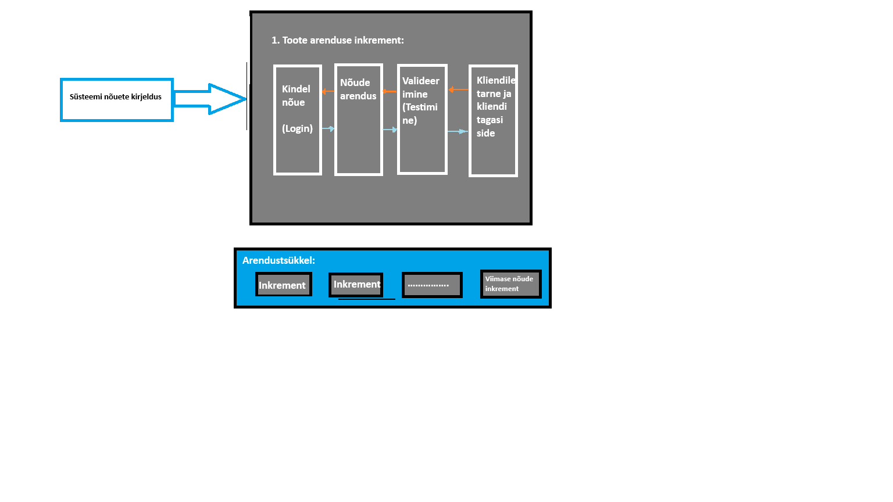

Inkrementaalne arendusmudel on üks viis lahendada kosemoduli jäika tsüklit. See aitab
arendusmeeskonal toime tulla muudatustega paremini. Muudatused võivad tulla kas äritegevusest,
kliendi soovidest, turu olukorra muutumisest, tehnoloogiate muutumisest, seaduse muutumisest või
lõppkasutaja tagasisidest. Kuna kosemudelis keset arendustööd on muudatustega toimetulek
keeruline, on kosemudeli kasutamise puhul muudatuste sisseviimine üsna kulukas, siinkohal tulebki
appi inkrementaalne arendusmudel. Mudel ise on siis ajaraafiku ja ei tugine erinevalt
kosemudelist täielikult valmiskirjeldatud kavandile. Selles mudelis saab arendada erinevaid
programmiosi samaaegselt või erinevatel aegadel.
Inkrementaalsesa arendusmudelis aitab samaegset arendustööd teha kindlad tegevused mida kosemudelis
ei ole. Nende tegevuste abil on võimalik kliendile kuvada programmile keskse tähtsusega osi, enne kui
neid täielikult arendama hakatakse. Tehakse näiteks, kas mingisugune kasutajaliidese prototüüp, või
programmeeritakse vähese testimise läbinud MVP (Minimum viable product) mis omab ainult programmi mnõetes kirjeldatud
kesket funktsiooni. Näiteks kui tegemist on failikonverteriga, siis ei oma ta suurt kasutajaliidese kujundust, ega isegi
kõiki formaate mis lõpp-programm teisendama peab, vaid ainult demonstreerib seda funktsionaalsust osaliselt.
| Head küljed | Halvad küljed |
|---|---|
|
Kulutused on väiksemad - Kuna kasutaja nõuded on muutuvad, aga muudatusi saab sisse viia arendustsükli käigus, on nende muudatuste kulud väiksemad kuna arendustsükkel ise ei ole vaja lõpuni viia, enne muudatuste sisse - viimist. |
Progressi jälgimine on keerukas - Arendustöö progressi ei jälgita enam arendatud nõuete järgi, kuna need ei ole arendustöö alguses valmis, vaid progressi jälgitakse arenduskiirusepõhiselt - kui palku igas ajavahemikus nõuteset arendada on võimalik. See tekitab siis halduritele nõude, et nad vajavad pidevalt dokumentatsiooni arendustöö hetke kulgemise kohta. Kui arendustöö on ka kiire, siis vahest on ka selle dokumentatsiooni hankimine keeruline, kuna iga väikese versiooni kohta ei ole mõtet seda lihtsalt tekitadagi. |
| Kliendi tagasiside on kohene - olemasolevale arendustööle saab meeskond keset arendust tagasiside, et vajadusel muuta oma nõudeid, ja seega arenduse suunda. Klient näeb ka kui palju on tehtud. |
Süsteemi struktuur aja jooksul degredeerub - Kuna arendatakse juurde pidevalt uusi osi, ning ka selliseid osi mida alguses planeeritud ei olnud siis kipub arendatava toote sisemine süsteem spagetistuma. Selle vältimiseks kulutatakse lisaressursse koodi refaktoreerimisele, et sisemine struktuur korras hoida. Kui korrashoidu et teostata, on hilisem muudatuste ja uute valmisosade integratsioon tunduvalt keerulisem. |
| Tarne on kiirem - klient saab juba funktsioneerivad osad kohe pärast arendustöö lõppu kasutusele võtta, ning klient saab sellest varem kasu kui näiteks tarkvaratootega, mida arendatakse jäiga arendusmudeliga. |

Kuna inkrementaalne arendus ja iteratiivne arendus on lihtsalt sarnared sõnad
kipuvad nad inimistel sassi minema, aga nad siiski tähendavad erinevaid asju.